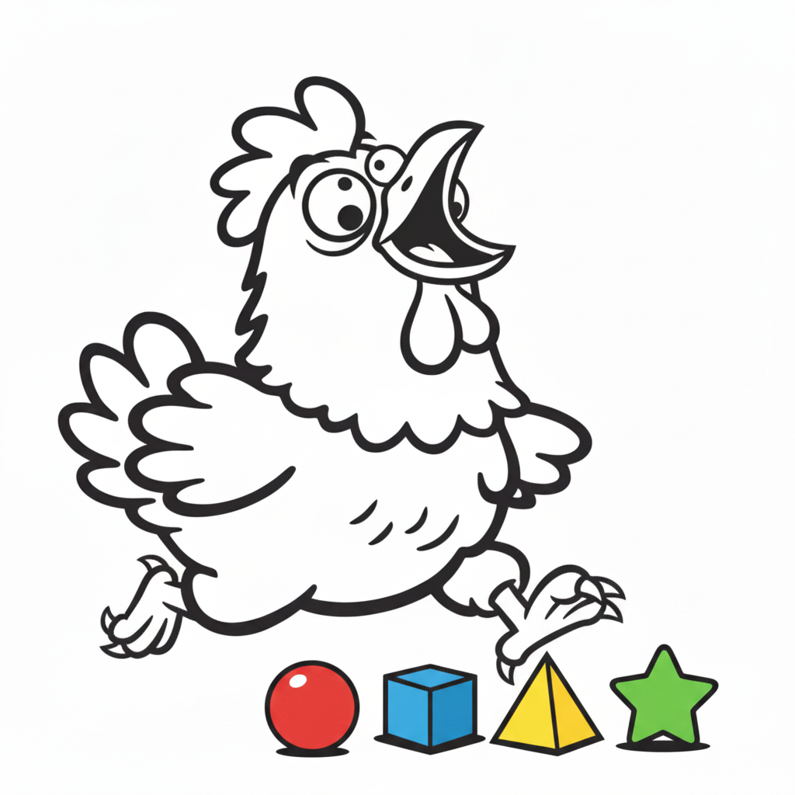

鶏を間近で見たとき、あの丸くて動きの速い目に「一体何が見えているのだろう」と感じたことはないだろうか。実は鶏の目は、色を感じ取る仕組みも、周囲を見渡す範囲も、動きを追う速さも、いずれも人間とはまったく異なる設計になっているとされる。人間の目を基準に「鶏は目が悪い」と語られることもあるが、視覚科学の観点から見ると、鶏の目はむしろ人間には備わっていない能力をいくつも持つ、非常に高性能なセンサーだと考えられている。この記事では、鶏の色覚・視野角・動体視力・紫外線の使い道を、研究データをもとに一つずつ紐解いていく。
人間の網膜には、赤・緑・青の波長を感知する3種類の錐体細胞があり、これによって3色型色覚が成り立っている。これに対し鶏の網膜には、紫外線に近い波長（およそ360nm付近）を感知する錐体細胞が加わった4種類の単一錐体が存在するとされ、紫外線・青・緑・赤という4つの領域をそれぞれ独立に感じ取れる4色型色覚を持つと報告されている[1]。さらに鶏の網膜には、色の識別を専門に担う単一錐体とは別に、明るさや動きの検出に優れているとされる「複重錐体」も備わっており、色を感じる仕組みと動きを感じる仕組みが役割分担しながら網の目状に規則正しく配置されているという研究報告もある[2]。それぞれの単一錐体には「油滴」と呼ばれる色付きの構造が組み込まれており、これが特定の波長だけを通すフィルターのように働くことで、色と色の境目をよりくっきり識別できるようになっていると考えられている[1][4]。

紫外線を感知できるということは、人間には見えていない情報のレイヤーがもう一枚存在するということでもある。鶏を含む多くの鳥では、羽毛の一部が紫外線を強く反射しており、この紫外線反射の強さが個体の栄養状態や健康状態を映し出すサインになっている可能性が指摘されている。実際にブロイラー用の親鶏を対象にした研究では、紫外線A波（UVA）を含む光の下で飼育されたオスに対し、メスがより長く注目し、近づいて過ごす時間が長くなる傾向が確認されており、オスの羽毛が持つ紫外線反射が配偶者選びの手がかりになっている可能性が示唆されている[6][7]。また紫外線の有無によって、地面の粒餌や虫の見え方も変化するとされ、採餌の際に獲物を見つけやすくなる効果があるとも考えられている。
鶏の目は頭の側面についているため、人間のおよそ180度に対して、鶏はおよそ300度という非常に広い視野角を持つとされる。ただし両目の視野が重なる「両眼視野」は多くの鳥類で20〜30度ほどとごく狭く、これは奥行きを正確に把握する能力とは引き換えになっていると考えられている[5]。奥行き感を犠牲にしてでも周囲をほぼ死角なく見渡せるようにすることで、天敵をいち早く発見できる構造になっているとみられる。さらに、片方の目は遠くを見渡すのに適し、もう片方は足元の採餌行動に適しているとする報告もあり、左右の目がそれぞれ異なる役割を担いながら、周囲の警戒と足元の餌探しを同時にこなしていると考えられている。
点滅する光が「点滅している」と感じられなくなり、連続した光として見え始める切り替わりの速さのことを「フリッカー融合率」と呼ぶ。人間のフリッカー融合率はおよそ40〜60Hzとされるのに対し、明るい環境下での鶏はおよそ70〜95Hzに達するとの報告があり、人間よりもかなり速い点滅までなめらかな光として認識できる可能性が示されている。この差には、色の識別を担う単一錐体とは別に、動きの検出を専門に担っているとされる複重錐体の働きが関わっているとみられ、素早く動く捕食者や逃げ回る虫の動きを的確にとらえるうえで役立っていると考えられている。人間の目には自然に見える蛍光灯や照明のちらつきも、鶏の目にはコマ送りのようにちらついて見えている可能性があるとされ、養鶏の照明選びでも配慮すべき点として挙げられることがある。
| 項目 | 🧑 人間 | 🐔 鶏 |
|---|---|---|
| 単一錐体のタイプ数 | 3種類 | 4種類（紫外線含む） |
| 視野角 | 約180° | 約300° |
| 両眼視野 | 約120° | 約20〜30° |
| フリッカー融合率 | 約40〜60Hz | 約70〜95Hz |
| 紫外線の感知 | できない | できる（〜360nm付近） |
鶏の紫外線感知能力を踏まえ、飼育環境の照明に紫外線A波（UVA）を加える取り組みが海外の研究で検証されている。ブロイラーを対象にした研究では、UVAを含む光を加えることで羽毛の状態が改善し、恐怖反応の強さを示す指標である「不動化反応」の持続時間が短くなり、歩行状態を示す評価スコアも改善したと報告されている[7]。またUVAのある環境では羽づくろい行動が増える傾向や、鶏自身がUVAを含む光を好んで選ぶ傾向を示した実験結果もあり[8]、快適な光環境を整えることが鶏の福祉向上につながる可能性が指摘されている。
孵化した直後のヒナは、餌となる小さな種子や粒を素早く見分ける必要があるため、視覚の発達が非常に速いことが知られている。孵化からおよそ48時間ほどで、ヒナの視覚の鋭さはほぼ成鶏に近い水準まで達するとされ、これは視力が安定するまでに数週間から数ヶ月を要する多くの哺乳類の赤ちゃんと比べても際立って早い。紫外線まで感知できる4色型色覚を含む高性能な視覚は、天敵から身を守りながら限られた期間で効率よく餌を見つけ出すための重要な適応の一つだったと考えられている。

| 色覚の仕組み | 紫外線（〜360nm）を感知できる4色型色覚とフィルター役の「油滴」を持つ |
| 視野と動体視力 | 約300度の広視野と高いフリッカー融合率（70〜95Hz）で周囲の危険や獲物を察知 |
| 生態・応用 | 配偶者選びや採餌に紫外線を利用し、養鶏現場の福祉ライティング改善にも応用される |